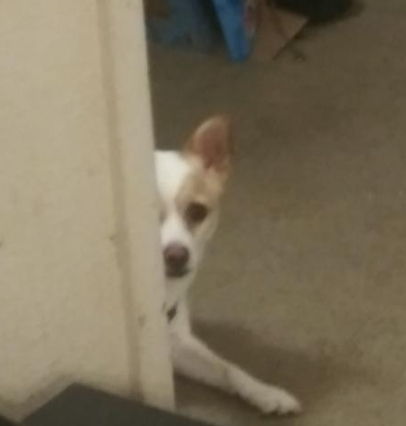
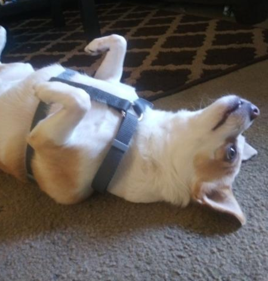
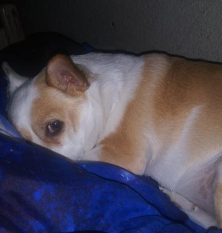
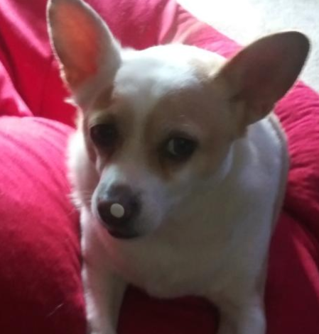

The Present
Rocky's doing alright nowadays, but he's still a lil jerk. I taught him how to sit, lay down, roll over, shake, high-five, and play dead. He's pretty talented, and yet still manages to fall off the couch and run into walls. He's kind of awful sometimes, he barks at the TV and at people with beards (sorry, Mr.Roth). It's really annoying, but hey, that's just how he is, I guess. He gets along with our new cat pretty well, so that's cool. He hurt his paw a few days ago and is in a cast, but he's alright.
  